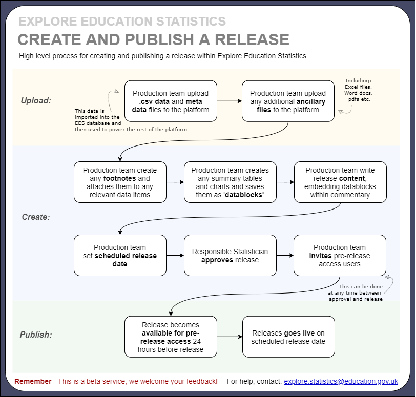
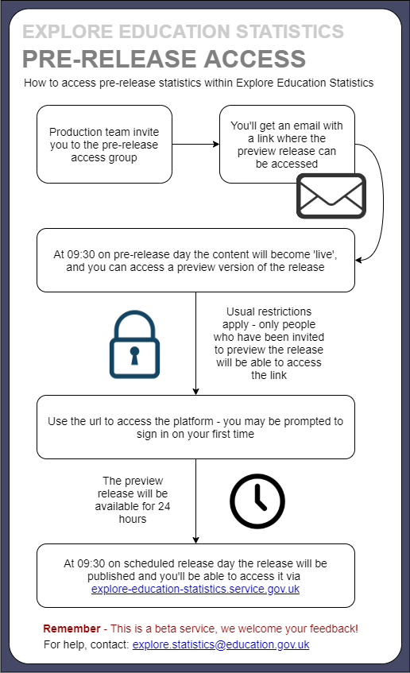
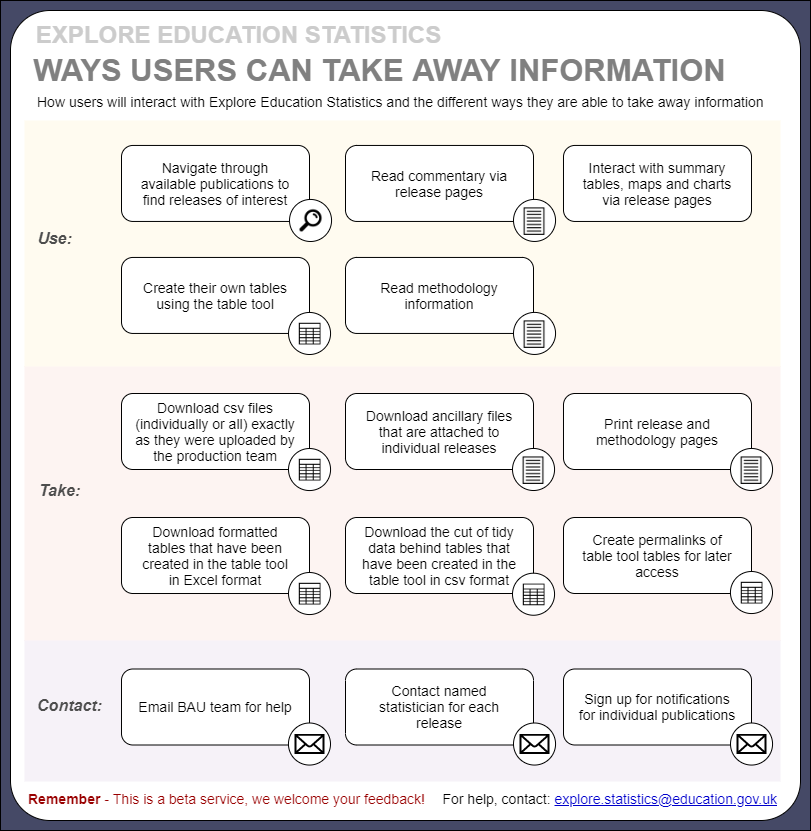

Guidance for how to publish Official Statistics via the new Explore Education Statistics platform.
Explore Education Statistics (EES) is a new platform designed to make DFE’s published statistics and data easier to find, access, use and understand. The admin service has been built so DFE statisticians can prepare their statistical releases and publish them in accordance with the predefined department release schedule.
More information on why EES was introduced and the functionality within the platform can be found in these slides.
At a high level the following table outlines the key differences between publishing via EES and the old method via gov.uk:
| Previous service: Statistics collections on gov.uk | New service: Explore Education Statistics |
|---|---|
| Statisticians request pdf and excel files are uploaded to release pages on gov.uk | Statisticians load csv data files on to the service and use them to build release pages |
| Release attachments are reviewed and approved via emails | Releases are reviewed and approved within the service |
| Release attachments are circulated for pre-release via email 24hours prior to publication date | Pre-release users are invited to preview releases within the service 24 hours prior to publication date |
The service is currently in public beta and has been launched as a MVP service, we will be iterating and improving the functionality based on user feedback throughout 2020.
The EES platform consists of two applications -
The public website
Where users access stats
The admin website
Where production teams create their statistics
add something about support for EES and who BAU is as we mention them in the next section
The public website is available at: explore-education-statistics.service.gov.uk
The admin website is available at: admin.explore-education-statistics.service.gov.uk
Access to the admin service is limited to DFE AD accounts only and users have to have been invited to the service by either the BAU team (for full access) or an existing user (for pre-release access). Invites to the service are sent out via email using gov.uk Notify.
To be invited to the service for full access the analyst would have to email a member of the BAU team (explore.statistics@education.gov.uk) to request access, stating what permissions they require and which publications they need access to. This should be accompanied with the relevant Team Leader’s approval.
The BAU team will be responsible for setting up and maintaining user permissions during the beta phase. Change requests will be monitored via the BAU mailbox (explore.statistics@education.gov.uk).
add the getting access diagram
At first we’ll be inviting analysts to the admin site in phases, depending upon when they expect to first publish statistics via EES. This is just so we can ensure we’re providing sufficient support and have awareness of what releases are going out in the short term. However, all analysts will be able to continue to test the service within our test environment:
test.admin.explore-education-statistics.service.gov.uk
test.explore-education-statistics.service.gov.uk
add a very short overview of what the public site is and what users can do there
Use Google Chrome or Microsoft Edge.
add the dashboard screenshot
When you enter the service you’ll see the admin dashboard, here what you can see will be dependent on your access permissions i.e. you’ll only see the publications that you have been granted access to. Within the test environment users are set up with full permissions (i.e. they can see/do everything) though in our production environment this will be restricted.
The BAU team will be responsible for setting up and maintaining user permissions during the beta phase. Change requests will be monitored via the BAU mailbox (explore.statistics@education.gov.uk).
Within this dashboard you can access existing publications to create/edit their releases. You can use the drop down lists to find releases by theme/topic/publication or use the draft and schedule releases tabs to see releases that are in progress.
Help and guidance for how to use the the admin website is available via the administrators guide.
After finding the publication you want to create a release for, just press the button to create a new release.
In the production environment, in the short term creating new releases can only be done by the BAU team – this is so we have awareness of all the early users within the admin site and can supply appropriate support.
Once you have created your release you will see enter the ‘create release dashboard’:
add screenshot of create release dashboard
Here, you need to work through the following tabs to create your release:
Manage data (uploading data files and adding footnotes)
Manage data blocks (creating summary tables, charts and key stats indicators)
Manage content (drafting release content)
Release status (moving through approval process)
Here you will update your tidy date files and accompanying metadata. You need to make sure that the data has passed through our data screener checks before trying to upload it.
Once you click to upload the file a ‘Status’ will be visible that shows the progress of the import process. It will go through the following stages:
• Queued • Validating • Importing • Complete
This may take a little while depending on the size of your file and if there are numerous files queued for import. A XX MB file takes around X minutes to get to ‘COMPLETE’. You cannot view the dataset or use it to create tables/charts until this status is ‘COMPLETE’.
If you believe your file is ‘stuck’ please contact the BAU team.
To add footnotes, go to the footnotes tab and click ‘add footnote’. Here you can select the individual indicators and filters you want to assign footnotes to, or if you’d rather, you can assign a footnote to the whole subject (data file). You can assign footnotes across multiple subjects.
Once file imports are complete move to manage data blocks tab and use the admin table tool to create your summary tables.
After building and saving a datablock table you will see there is now a ‘configure content’ tab – here you can choose to add a chart to your datablock.
As you build your chart, you’ll be shown a live preview as you go. The configuration tabs can be done in any order, but it makes sense to add data first. You’ll add a series one at a time and can style each of them using the ‘change styling’ options.
Within the ‘chart configuration’ tab you can add a title, move the legend and change chart dimensions. Then move onto the x-axis configuration, here you can alter gridlines, labels, sort, limit and add reference lines.
Same for y-axis configuration, play around until the chart looks how you want it to.
If you create your chart and then change your mind as to what chart type would be best you can just click to change it and it will try to save all the options that you had applied previously.
Note, within the vertical and horizontal bar chart types you can also create stacked bar charts via the chart configuration options.
You can create maps too, though there are a few bugs around that at the moment – it should work fine for region, LA and LAD data, though remember your source table needs to include information for all geographies in your map to be able to map them.
Remember to save your chart when you’re done
In the manage content tab you can now start creating your release, embedding the datablocks you’ve created as you go.
You can use the page view toggles (bottom left of the page) to jump between edit and preview mode.
Use the ‘Add secondary stats’ button to add a datablock to your headline stats section. Key stats tiles also need to be created as a datablock table (creating a table as a single number only).
Once you’re happy with your release you need to change it’s status in order to move it through the release pipeline.
There are three statuses:
Only users with ‘responsible statistician’ permissions (usually G6 or above) can sign off the release for publication.
Prior to each release going live the production team are also able to grant pre-release access to a named group of users 24 hours before it goes live. These users do not require full access (to the whole admin service) but will be able to see preview versions of any releases they have been granted access to.
To invite a user, just add their email address. All invited users will receive an email to say that they have been given pre-release access and will get a url where the preview release will be available.
This preview is only accessible for the 24hours before the publication date (though the emails may go out to users before then). We expect teams will continue to send an email at 09:30 on pre-release day, including any additional briefing and the link to the pre-release area.
TBA
Before releasing statistics for the first time you may want to discuss the new process with key stakeholders and/or pre-release users to make them aware of the new service. You should also inform the BAU/HOP teams.
Before you create a new release in the platform:
Before you publish a release in the platform:
Add a section about onboarding and step-by-step for republishing a gov.uk release on gov.uk


